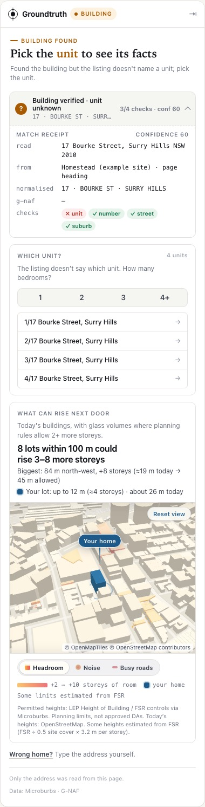

Can a browser extension show facts for the right home, every time?
Groundtruth is a Chrome extension for realestate.com.au and domain.com.au. It reads only the listing's address, matches it to one home in G-NAF, and shows independent facts beside the listing. If it isn't sure which home it is, it shows nothing.
What we found
The hardest part was not the data. It was making sure the data belonged to the home on screen. Both portals keep the previous listing's data in the page after you click to the next one, so an extension that trusts it shows the wrong home. And many listing addresses (C603/276, 303N/16-20, 188A, a hidden unit) don't line up neatly with G-NAF.
What does the buyer see?

A slim panel on the right of the listing. From the top:
- Verified home receipt. What we read, how we normalised it, which of the four checks passed (unit, number, street, suburb) and the G-NAF id.
- What can legally rise next door. A 3D map of today's buildings, with glass volumes on lots where planning controls allow 2 or more extra storeys.
- Value. The Microburbs estimate with its 80% range and confidence. The buyer can type the guide they were given, and the panel says whether it looks believable, low or above the range. We never read the guide from the page.
- Street vs suburb, sale history, risk overlays, strata levy.
- A 30-second spoken briefing of the above, with captions.
Outside the 29 City of Sydney suburbs, the panel says so and makes no data call.
What data supported it?
| Source | What we use it for |
|---|---|
| Microburbs API | Unit-level G-NAF geocode; the key's 29 suburbs (/v1/me); valuation; sale history; street profile; risks; strata levies; agency quoting; building controls (height and FSR); surrounding lots; noise; busy roads |
Organiser file flats-city-of-sydney.csv | Cross-check of every match. 149,880 residential rows indexed (shops, suites, car spaces dropped). Units and bedrooms per building. |
| OpenStreetMap via OpenFreeMap tiles | Today's building footprints and heights for the 3D view |
| The listing page | The displayed address only |
How often was each fact there?
We looked up 45 real homes across the 29 suburbs and counted how often each fact came back with usable data.
| Fact | Available |
|---|---|
| Risk overlays | 100% |
| Strata levy (suburb level) | 100% |
| Building controls (for the 3D view) | 100% |
| Street profile | about 90% |
| Sale history with a price | about 20% |
| Valuation (AVM) | about 13% |
| Agency quoting accuracy | 0 of 45 |
So the panel orders facts by how often they exist and collapses the missing ones. We had planned agency quoting as the headline fact. With no data on any of the 45 homes, we demoted it.
How did we match a listing to one home?
Step 1: read the right address
We read only the address. On realestate.com.au we use the page heading, and the JSON-LD only on a fresh page load and only when it agrees with the heading. On domain.com.au we use the page data (__NEXT_DATA__) only when its listingId matches the id in the URL; otherwise the heading.
The reason: after you click from one listing to the next, both sites still hold the previous listing's data in the page for a while. We saw this live on both sites. An extension that reads it shows facts for the wrong home. We re-read on every navigation, wait until the heading matches the new URL, and drop any reply for a listing the buyer has left.
Step 2: resolve it to one G-NAF home
We split the address into unit, number, street, suburb and postcode. This handles ranges (417-419), letter units (C603), Level 8/1 (a floor, not a unit), multiple units (330&330A), named units (Penthouse) and missing street types. Area is the 29 suburbs returned by /v1/me, which the API names with a suffix such as Waterloo (NSW). We then geocode through Microburbs, which returns unit-level G-NAF records, and score each one on the four parts separately.
The key rule: EXACT needs a confirming record in the organiser address file, or a G-NAF record typed 'house' when the listing has no unit. Without that, a lone base record for a tower can look like a match when the unit is really unknown.
What do buyers already see?
We checked both portals and the Chrome Web Store on 7 November 2026.
The property sites
| Fact | realestate.com.au | domain.com.au | Groundtruth |
|---|---|---|---|
| Price guide | Sometimes; often hidden | Yes | Checks the guide the buyer types |
| Estimate for this home | No | Domain estimate | Microburbs estimate, 80% range, confidence |
| Last sold | No | "Domain Says" last sold | Sale history of this home |
| Suburb context | Suburb insights | Suburb profile | This street against its suburb |
| Schools, NBN | Schools, NBN | School catchments | Not repeated |
| Strata levy | No | Paid strata report | Suburb levy levels |
| Risk overlays | No | No | Yes |
| What can be built next door | No | No | 3D headroom view |
| Proof which home the data is for | n/a | n/a | Match receipt with G-NAF id |
Existing extensions
| Extension | Users | What it adds | Limits |
|---|---|---|---|
| Homer (formerly KoalaData) | ~10k | Guide against the agent's past sales; campaign history | Login wall |
| Property Seeker | ~10k | Hidden prices; Walk Score | Nothing about the specific home |
| Property Mate | ~4k | Price guide; flood and bushfire; AI pros and cons | REA only |
| PriceDaddy! / Real Estate Mate | 1–3k | Price guide estimates | REA only; not kept up to date |
| Groundtruth | new | Verified G-NAF match with receipt; planning headroom in 3D; value against the buyer's guide; street vs suburb; sale history; risks; strata; spoken briefing | City of Sydney only (the hackathon area) |
None of the four matches the listing to a G-NAF home, shows which home its data is for, or shows planning headroom.
Why these facts for a browsing buyer?
A buyer scrolling listings has a few seconds per home. We picked facts that the portals don't show, that change the decision, and that we could get for most homes.
- Which home is this? Every other fact depends on it, so it comes first, as a receipt the buyer can check.
- What can rise next door. Views, light and quiet can change with one development application. The controls are public, but buyers rarely look them up. Building controls were available for every home we tried.
- Value against the guide. The most common question. The buyer types the guide they were given, so we never depend on a hidden or vague guide, and the guide never leaves the page.
- Street vs suburb. Suburb medians hide big street differences. Available for about 90% of homes.
- Risks and strata levy. Costs that tend to show up after an offer. Available for every home.
- Sale history. Shown when it exists (about 20%).
What we left out on purpose: public-housing fields. They are estimates of where social tenants live, they stigmatise neighbours, and we can't verify them. The proxy strips them before anything reaches the panel. We also don't repeat schools or the guide, which the portals already show.
How did we check it?
At 10:27, before any resolver tuning, we collected 30 real for-sale listings (15 realestate.com.au, 15 domain.com.au), recorded only each URL and displayed address, labelled the expected state by hand, and froze the file with a hash. Labels: 20 EXACT, 5 BUILDING, 4 OUT_OF_AREA, 1 NO_MATCH. The set covers slash units, letter units, Level n, number ranges, number suffixes, multi-unit and named units, partial addresses, a locality alias and a missing street type. The headline measure is the false-match rate: facts shown for a home that isn't the listing.
| Measure | Before late fixes | Final |
|---|---|---|
| False matches (target 0) | 1 / 30 | 0 / 30 |
| Exact homes found (labelled EXACT) | 17 / 20 | 15 / 20 (75%) |
| Precision of EXACT answers | 17 / 18 | 15 / 15 (100%) |
| Building found (labelled BUILDING) | 4 / 5 | 4 / 5 |
| Out-of-area correct | 4 / 4 | 4 / 4 |
| Agreement with label: realestate.com.au | 13 / 15 | |
| Agreement with label: domain.com.au | 11 / 15 |
What it still misses, and why
| Listing pattern | Expected | Got | Why |
|---|---|---|---|
Units A10, C603, 303N | EXACT | BUILDING | These unit numbers are not in G-NAF or the address file. The building is right; the buyer picks the unit. No resolver could return the right id. |
188A Rochford St, 278C Bulwara Rd | EXACT | NO_MATCH | G-NAF types them 'unit' with no unit number, and the flats file has no record. We won't pin an ambiguous record. |
| 905 South Dowling St (off the plan) | BUILDING | NO_MATCH | No record in the address file, and nothing else at the number to offer as a building. Safe, but not helpful. |
All six misses fail safe: none shows facts for the wrong home.
What worked
- Checking four parts separately. Unit, number, street and suburb each pass or fail, so every miss is explainable on the receipt.
- Cross-checking against the address file. It removed the one false match and gave us bedroom counts to narrow hidden units.
- Freezing the held-out set early, and writing down every later change and what it cost (exact rate 17/20 → 15/20 to get false matches to 0).
- Ordering facts by availability. The panel opens on facts that exist instead of a stack of "not available".
- Mock mode. We built and tested the whole panel before the API key arrived.
What did not work, and what remains uncertain
- Agency quoting was our planned headline. It was available for 0 of 45 homes.
- Valuation coverage is low (about 13%), so the value card is often missing.
- Height controls can sit below existing towers. One unit at 417-419 Bourke St is in a 3 m height zone under a tower of about 63 m. We now flag that the building predates today's control instead of promising "up to 3 m".
- OpenStreetMap heights are estimates, and some are missing. Where a height control is missing we estimate it from FSR and say so.
- Some units are not in G-NAF (
A10,C603,303N), so the best we can do is the building. - The two sites behave differently. Moving between listings is an in-page change on realestate.com.au but a full reload on domain.com.au, so we handle both paths.
- The address file is a flats file. It can't confirm freestanding houses, which is why we rely on G-NAF's 'house' type there. It also doesn't filter by building type, so an industrial-zoned building with two flats still counts as confirmed.
- 30 listings is a small check. 0 of 30 doesn't prove the false-match rate is zero.